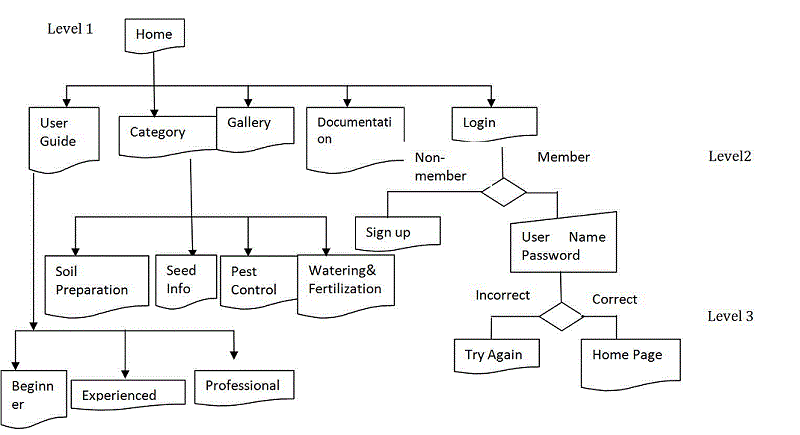

Task One: Design Task
(a) Functional structure flowchart
(b) Visuals

I aim to apply minimalistic design principles in order to maximize user experience. One of the most essential elements in a minimalist design is typography.
The use of the font family Arial, Helvetica, sans-serif for my header and title makes a direct difference compared to the default setting of font because one key different is the
letter-spacing, which is a bit more generous than that of the conventional fonts such as Arial and Serifs, affecting the way it looks in virtually all setting, large and small blocks
of text, graphics, heading etc. I wish to create the sense of modern and contemporary look of my website because the idea of patio gardening and living a healthy lifestyle nowadays
have been widely populated across different generations, gardening no longer targets old generation, young generations have also show trends to participate. Therefore, I felt that this
was necessary and would add to the quality of the font, as well as my website,as a congruent letter spacing is pleasing to the eye. The font family Arial, Helvetica, sans-serif is
comprised of predominantly classically-shaped geometric letters, so it has a clean crisp appearance without as much spacing between the letters.
The color scheme of the website uses green as the main colour juxtaposed against with light green and red.
The idea of choosing green as the main colour of the website is because green represents the idea of harmony and balance, growth and simplicity.
Using green throughout my website design creates the sense of nurturing as taking care of plants takes great patience and persistence.
However, I made some eventual modification against my conceptual colour design because I find out that in order to create a cohesive layout,
it is necessary to establish contrast in your web page, yet very high contrast are difficult to achieve with color combination other than black and white,
thus I choose to apply different tones of green such as emerald green and aqua green to create contrast between my navigation bar and banner.
In my conceptual design, I set the background to be a solid green color (analogue) as opposed to a complimentary color for the purpose of a coherent design.
But in some parts, I also used discordant colours such as red to be eye-catching and as attention-getting devices.
But in my final website, I decide to abandon the use of red because red does not seem to fit into the entire patio concept other than being eye-catching.
I also uploaded our own heading image to personalize the look of the site.
The use of lines and borders add to the style of my design and allows me to really group and organize my information in a readable manner. For example,
in the guide page, I used very thin borders and separator lines in my popular article section to reflect the visual quality of my body font. Again, the entire
design strives to achieve a minimalist visual effect, thus the use of very lightweight borders around each section of the web page enables me to group and divide
my content effectively. In this way, the segmentation of my web page is clear to avoid disruption and overly complex layout. Most importantly, the style of my lines
and borders is congruent with the rest of the design to reinforce the idea of consistency. Last but not least, the use of grids allows the headers and content
paragraphs in Green Patio to appear more organized and ordered. Grids also help web designers achieve the minimalist look with sufficient white space.
There are several assumptions need to be made in order to understand the limitation of the website. Due to the limitation of time, the visual aesthetics has become my
main focus of this project. For example, I spent most of my time playing around with different fonts and grouping different elements into a visually pleasant manner as
opposed to implementing the a lot of the actual functionality using javascript such as sign up and login which has originally been my primary objectives in the design
phase. However, fonts on the web are limited, as designers, we only get access to a small selection of fonts that will be installed on most users' computers.
So I had to import fonts from other resources to ensure the creative look. It became clear to me that building up a full structure of the website appears more important
than just worrying about a specific function.
As I have already stressed in my font scheme, I deem minimalistic design is effective in eliminating any complexities to a
design and to make a simple, elegant and minimal in the use of technologies and content. For example, I eliminate design unnecessary pattern and gradient background images
and replace it with a solid color that is light to make the content standout and the main focus. I also use color contrasts between the typography and the color to emphasise
on important text and provide a better page flow. In addition, I removed unnecessary graphical icons and images that make the design otherwise crowded.